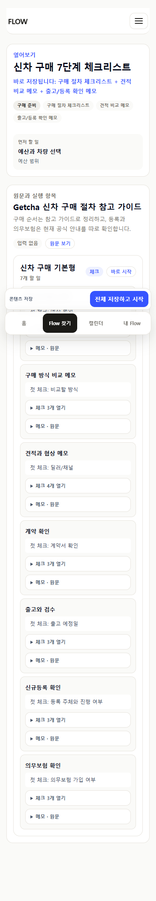
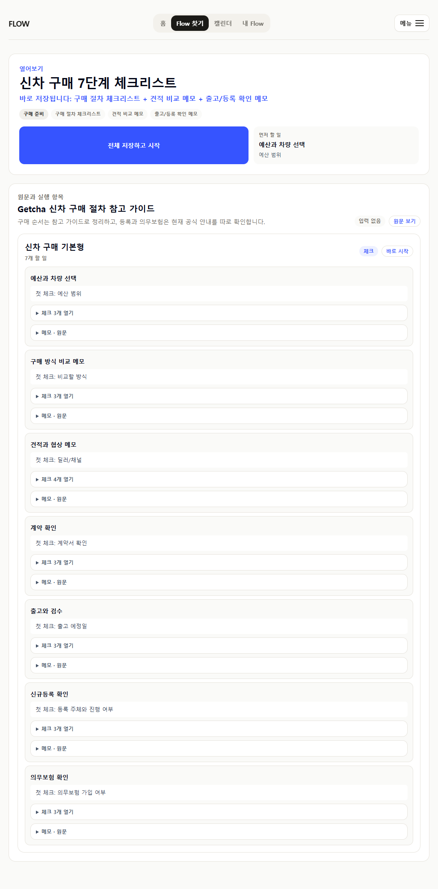
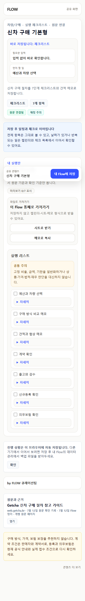
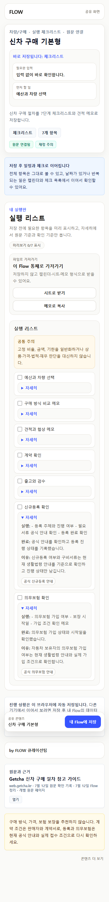

2026-07-12 · source-fit and currentness semantics
신차 구매 Flow는 유지하되
근거의 책임을 분리했습니다
민간 가이드는 구매 순서 참고에만 쓰고, 신규등록과 의무보험은 현재 생활법령 안내를 행별로 연결했습니다. 링크를 오늘 확인한 날짜와 Flow를 정리한 날짜도 원문 업데이트일처럼 보이지 않게 분리했습니다.
0수동 감사 없는 금융 민감 공개 실행 Flow
2실행 화면의 공식 등록·의무보험 링크
0고정 비율·금액·기한 노출
3다음 감사 대상 의료 민감 운동 Flow
7개 행은 추천값이 아니라 실제 조건과 진행 상태를 기록합니다. `신규등록 확인`과 `의무보험 확인`은 공식 링크를 상세에서 직접 열며, 나머지 구매 행은 Getcha 글을 참고 자료로만 표시합니다.




이 패키지가 보증하지 않는 것
current 141은 원문 게시일이나 의미상 최신성 141건을 뜻하지 않습니다.- 정부24처럼 공식 URL도 일시적이거나 오래된 점검 화면으로 바뀔 수 있습니다.
- 실제 구매자 관찰, 등록관청 접수, 보험 계약 검토는 아직 0건입니다.
- 다음 순서는 의료 민감 운동 영상 3개, 중간 위험 공개 실행 Flow 5개입니다.